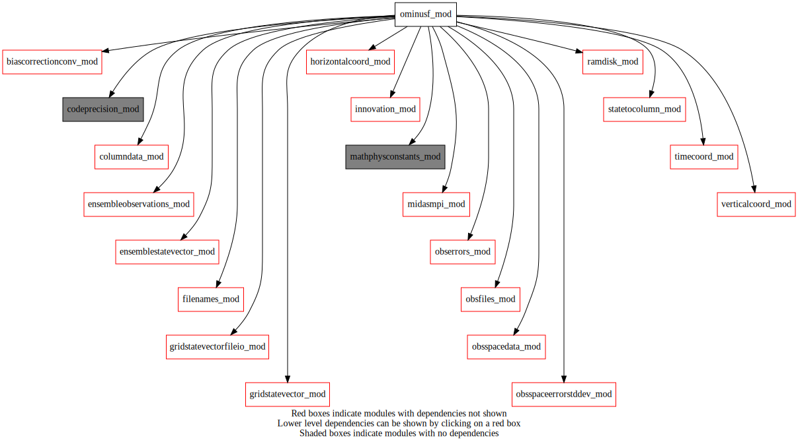
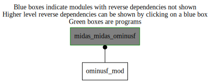

Dependency Diagrams:
 Direct Dependency Diagram¶
 Reverse Dependency Diagram¶
Description
MODULE oMinusF_mod (prefix=’omf’ category=’1. High-level functionality’)
- Purpose
Module for Observation minus Forecast (O-F) computation
Quick access
- Routines
Needed modules
codeprecision_mod: MODULE codePrecision_mod (prefix=’pre’ category=’8. Low-level utilities and constants’)
ramdisk_mod: MODULE ramDisk_mod (prefix=’ram’ category=’8. Low-level utilities and constants’)
midasmpi_mod: MODULE midasMpi_mod (prefix=’mmpi’ category=’8. Low-level utilities and constants’)
mathphysconstants_mod: MODULE MathPhysConstants_mod (prefix=’mpc’ category=’8. Low-level utilities and constants’)
horizontalcoord_mod: MODULE HorizontalCoord_mod (prefix=’hco’ category=’7. Low-level data objects’)
verticalcoord_mod: MODULE verticalcoord (prefix=’vco’ category=’7. Low-level data objects’)
timecoord_mod: MODULE timeCoord (prefix=’tim’ category=’7. Low-level data objects’)
obsspacedata_mod: MODULE obsSpaceData_mod (prefix=’obs’ category=’6. High-level data objects’)
columndata_mod: MODULE columnData_mod (prefix=’col’ category=’6. High-level data objects’)
gridstatevector_mod: MODULE gridStateVector_mod (prefix=’gsv’ category=’6. High-level data objects’)
gridstatevectorfileio_mod: MODULE gridStateVectorFile_mod (prefix=’gio’ category=’4. Data Object transformations’)
obsfiles_mod: MODULE obsFiles_mod (prefix=’obsf’ category=’3. Observation input/output’)
innovation_mod: MODULE innovation_mod (prefix=’inn’ category=’1. High-level functionality’)
obserrors_mod: MODULE obsErrors_mod (prefix=’oer’ category=’2. B and R matrices’)
biascorrectionconv_mod: MODULE biasCorrectionConv_mod (prefix=”bcc” category=’1. High-level functionality’)
obsspaceerrorstddev_mod: MODULE obsSpaceErrorStdDev_mod (prefix=’ose’ category=’1. High-level functionality’)
ensembleobservations_mod: MODULE ensembleObservations (prefix=’eob’ category=’6. High-level data objects’)
ensemblestatevector_mod: MODULE ensembleStateVector_mod (prefix=’ens’ category=’6. High-level data objects’)
filenames_mod: MODULE fileNames_mod (prefix=’fln’ category=’7. Low-level data objects’)
statetocolumn_mod: MODULE stateToColumn (prefix=’s2c’ category=’4. Data Object transformations’)Variables
Subroutines and functions
- subroutine ominusf_mod/omf_ominusf(columntrlonanlinclev, columntrlontrllev, obsspacedata, midasmode, addhbht, addsigmao)¶
- Purpose
compute Observation-minus-Forecast (OmF)
- Arguments
columntrlonanlinclev [struct_columndata ,inout,target]
columntrlontrllev [struct_columndata ,inout,target]
obsspacedata [struct_obs ,inout,target]
midasmode [character ,in]
addhbht [logical ,in]
addsigmao [logical ,in]
- Called from
- Call to
ram_setup(),tim_setup(),obsf_setup(),mpc_printconstants(),pre_printprecisions(),gsv_setup(),hco_setupfromfile(),vco_setupfromfile(),col_setvco(),inn_setupobs(),bcc_applyaibcor(),obs_famexist(),bcc_applygpbcor(),bcc_applyuabcor(),col_setup(),col_allocate(),obs_numheader(),oer_setobserrors(),inn_gethcovcofromtrlmfile(),gsv_allocate(),tim_getdatestamp(),gsv_zero(),gio_readtrials(),inn_setupcolumnsontrllev(),inn_computeinnovation(),inn_setupcolumnsonanlinclev(),ose_computestddev()
- subroutine ominusf_mod/omf_ominusfens(ensobs, obsspacedata, nens, enspathname, midasmode, addhbht, addsigmao)¶
- Purpose
compute Observation-minus-Forecast (OmF) for ensembles
- Arguments
ensobs [struct_eob ,inout,target]
obsspacedata [struct_obs ,inout,target]
nens [integer ,in]
enspathname [character ,in]
midasmode [character ,in]
addhbht [logical ,in]
addsigmao [logical ,in]
- Called from
- Call to
ram_setup(),fln_ensfilename(),tim_setup(),tim_getstamplist(),tim_getdatestamp(),hco_setupfromfile(),vco_setupfromfile(),obsf_setup(),mpc_printconstants(),pre_printprecisions(),gsv_setup(),col_setvco(),inn_setupobs(),bcc_applyaibcor(),obs_famexist(),bcc_applygpbcor(),bcc_applyuabcor(),col_setup(),col_allocate(),obs_numheader(),oer_setobserrors(),eob_allocate(),obs_numbody(),eob_zero(),eob_setlatlonobs(),gsv_allocate(),gsv_zero(),gio_readfromfile(),ens_allocate(),ens_readensemble(),ens_copymember(),gsv_copy(),gsv_copyheightsfc(),s2c_nl(),inn_computeinnovation(),eob_setyb(),inn_setupcolumnsonanlinclev(),ose_computestddev(),gsv_deallocate()
{kind=link}
{kind=link}